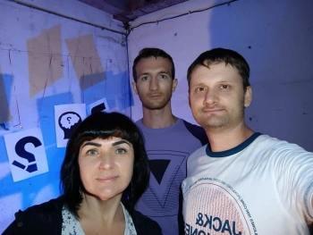
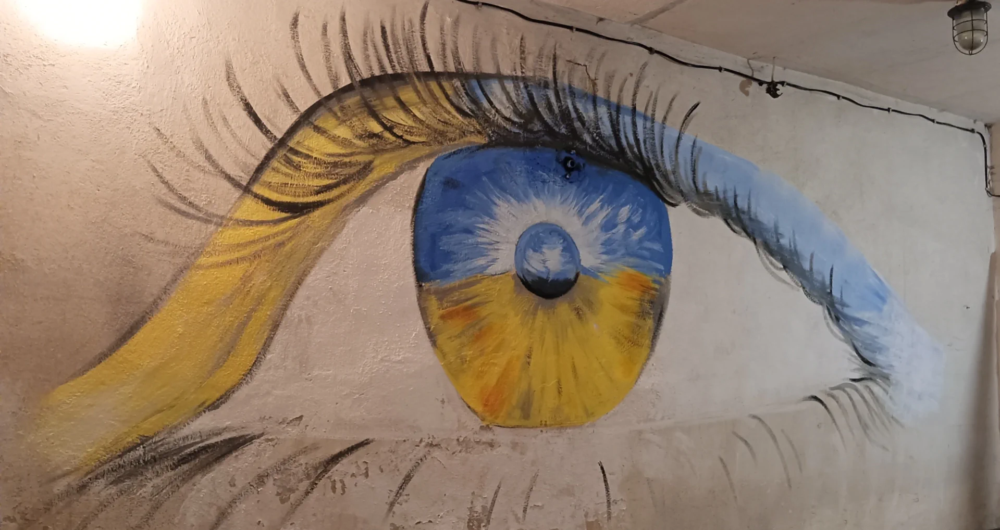

Арт-простір «Бомбік»: культура в бомбосховищі Кривого Рогу
Об’єднання небайдужих людей, яке проводило творчі вечори й збирало донати на ЗСУ.
Наразі арт-простір «Бомбік» не працює, нові заходи не відбуваються.

Культура і мистецтво
Вистави, концерти й поетичні вечори в бомбосховищі
Психологічна підтримка громадян
Культурні заходи для мешканців міста та переселенців
Допомога нашим героям
Вхід був вільний, а зібрані донати ми передавали на потреби ЗСУ
Наші досягнення
15+
подій проведено
30+
творчих особистостей залучено
500+
глядачів відвідали наші заходи
30 000+
гривень зібрано на потреби ЗСУ
Наші заходи
Фотозвіти минулих вистав, концертів і творчих вечорів у нашому бомбосховищі.
Хто ми
А ви знаєте, що наше місто унікальне? Кривий Ріг не тільки шахтарський,
а й дуже творчий! Активні криворіжці створили тут унікальний арт-простір.
Чому унікальний? Зараз розповімо.
Багато хто з вас бував у театрі, відчував цей таємничий тремор у темряві зали й нагороджував акторів бурхливими оплесками. А як ви думаєте, в якому незвичайному місці можна робити театральні вистави? Ніколи не здогадаєтеся! У бомбосховищі!
Організатор Денис Чигірьов давно планував створити місце для культурного відпочинку й навіть подавав проєкт арт-простору в парку «Шахтарський», але той не пройшов за конкурсом. Уже після початку війни йому зателефонував відомий у місті актор Павло Осіков і спитав, чи немає приміщення для вистав. Перебравши декілька варіантів, Денис згадав, що в дуже активної голови ОСББ Світлани Остапчук є в користуванні бомбосховище.
Світлана підтримала, Павлу сподобалася ця ідея, і після деяких приготувань у бомбосховищі відбулася перша вистава. Відтоді тут проходили моновистави, концерти, поетичні вечори, імпровізаційні шоу та лялькові вистави для дітей.
Наразі арт-простір «Бомбік» не працює, нові заходи не відбуваються.
Часті запитання
Чи працює зараз арт-простір «Бомбік»?
Ні. Наразі арт-простір не працює, нові заходи не відбуваються. На сайті зібрано фотозвіти минулих вечорів.
Де знаходився арт-простір «Бомбік»?
У Кривому Розі, в Покровському районі, зупинка «Гірник». Заходи проходили в бомбосховищі.
Скільки коштував вхід?
Вхід був вільний, а глядачі залишали донати. Усі зібрані кошти йшли на підтримку ЗСУ.
Чому заходи проходили в бомбосховищі?
Ми обрали повноцінне бомбосховище, щоб глядачі могли відпочити навіть під час сирени.
Куди йшли зібрані донати?
На потреби ЗСУ. Загалом ми зібрали понад 30 000 грн, а суми з окремих вечорів указано у фотозвітах: наприклад, моновистава «Око за око» принесла 2410 грн, а «Творче асорті» — 2490 грн.
Чи були заходи для дітей?
Так. Наприклад, у нас виступав ляльковий театр «BABY», і стільки дітей це бомбосховище ще не чуло!